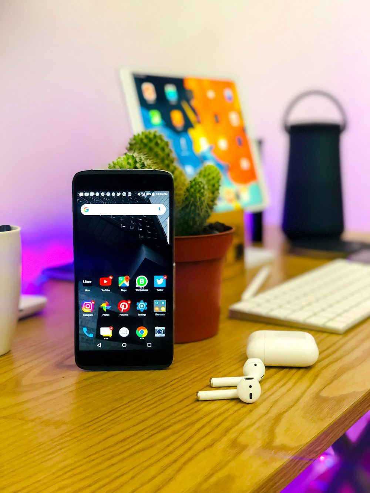

Uses of Mobile Phones
Mobile phones are used for a variety of purposes, such as keeping in touch with family members, for conducting business, and in order to have access to a telephone in the event of an emergency. Some people carry more than one mobile phone for different purposes, such as for business and personal use. Multiple SIM cards may be used to take advantage of the benefits of different calling plans. For example, a particular plan might provide for cheaper local calls, longdistance calls, international calls, or roaming.
-

- A study by Motorola found that one in ten mobile phone subscribers have a second phone that is often kept secret from other family members. These phones may be used to engage in such activities as extramarital affairs or clandestine business dealings.
- Some organizations assist victims of domestic violence by providing mobile phones for use in emergencies. These are often refurbished phones.
- The advent of widespread textmessaging has resulted in the cell phone novel, the first literary genre to emerge from the cellular age, via text messaging to a website that collects the novels as a whole
- Mobile telephony also facilitates activism and citizen journalism.
- The United Nations reported that mobile phones have spread faster than any other form of technology and can improve the livelihood of the poorest people in developing countries, by providing access to information in places where landlines or the Internet are not available, especially in the least developed countries. Use of mobile phones also spawns a wealth of microenterprises, by providing such work as selling airtime on the streets and repairing or refurbishing handsets
- In Mali and other African countries, people used to travel from village to village to let friends and relatives know about weddings, births, and other events. This can now be avoided in areas with mobile phone coverage, which are usually more extensive than areas with just land-line penetration.
- The TV industry has recently started using mobile phones to drive live TV viewing through mobile apps,advertising, social TV, and mobile TV.[47] It is estimated that 86% of Americans use their mobile phone while watching TV.
- In some parts of the world, mobile phone sharing is common. Cell phone sharing is prevalent in urban India, as families and groups of friends often share one or more mobile phones among their members. There are obvious economic benefits, but often familial customs and traditional gender roles play a part.[48] It is common for a village to have access to only one mobile phone, perhaps owned by a teacher or missionary, which is available to all members of the village for necessary calls.